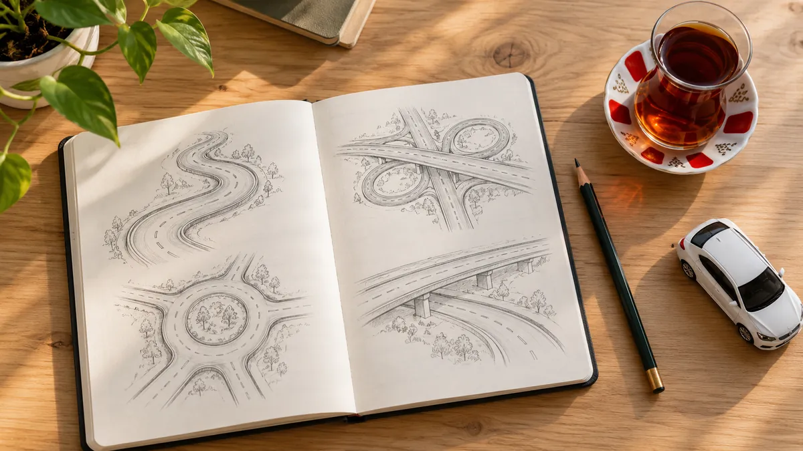
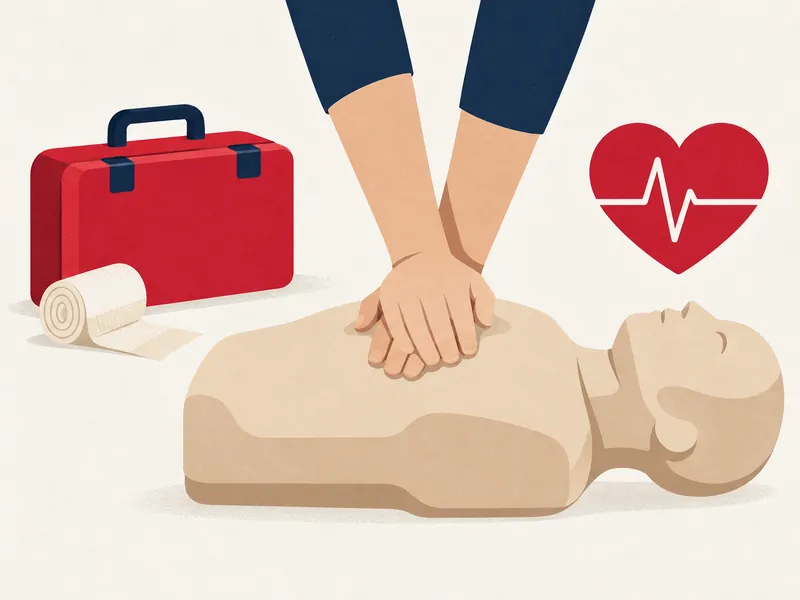
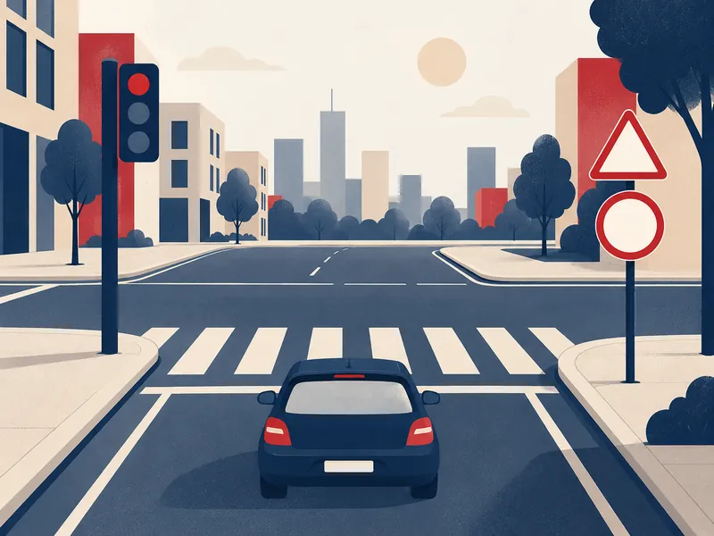
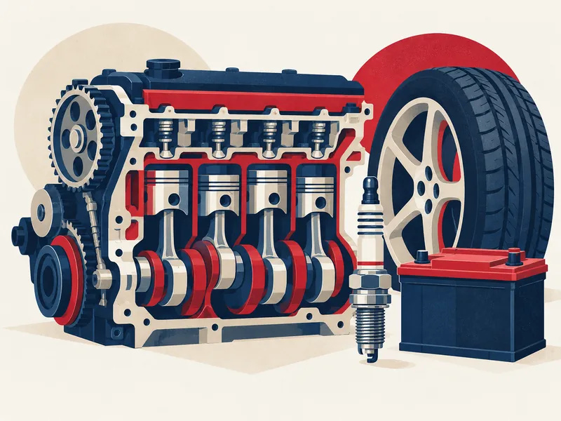
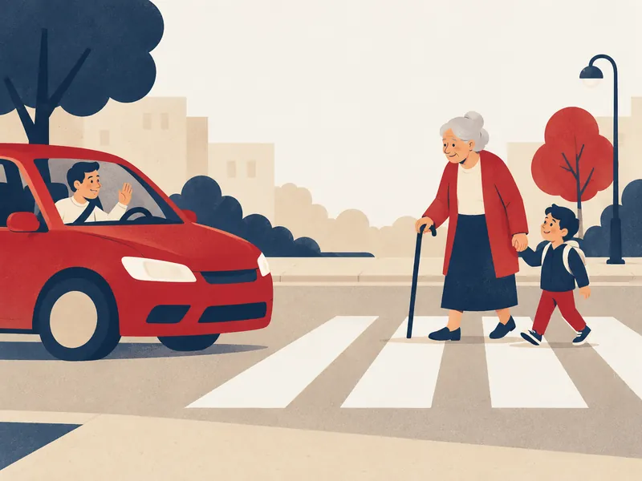

- Ana sayfa
- Sınava Hazırlık
Sınava Hazırlık
e-Sınav'ın dört dersi 40 konuda. Her konuyu okuyun, varsa uygulamasını yapın, sorularını çözün; hazır olduğunuzda deneme sınavına girin.
- 0/40konu okundu
- 0soru çözüldü
- –doğru oranı
- –en iyi deneme puanı
- 1
Öğren
40 konu anlatımı; 10 konuda etkileşimli uygulama. Konuyu okuyun, sonra sorularına geçin.
İlk konuyla başla - 2
Çalış
1.531 çıkmış soru. Her konunun soruları kendi sayfasında; burada dersleri karışık çalışabilirsiniz.
Konular
Sırayla ilerleyin; her konunun yanında okuyup okumadığınızı, çözdüğünüz soru sayısını ve doğru oranınızı görürsünüz.

İlk Yardım
Olay yerinde ilk müdahale: temel yaşam desteği, kanamalar, kırıklar, yanıklar, bilinç bozuklukları ve kazazedenin taşınması.
- 1İlk yardımın temel ilkeleri61 soruOkundu0/61
- 2İnsan vücudu ve sistemler20 soruOkundu0/20
- 3Hasta ve yaralının değerlendirilmesi31 soruOkundu0/31
- 4Temel yaşam desteği41 soru · UygulamaOkundu0/41
- 5Kanamalar ve şok56 soruOkundu0/56
- 6Yaralar ve yaralanmalar22 soruOkundu0/22
- 7Kırık, çıkık ve burkulmalar47 soruOkundu0/47
- 8Bilinç bozuklukları15 soruOkundu0/15
- 9Yanık, donma, zehirlenme ve elektrik çarpması22 soruOkundu0/22
- 10Pozisyonlar ve kazazede taşıma37 soruOkundu0/37

Trafik ve Çevre
Trafik işaretleri, geçiş hakkı, hız ve takip mesafesi, duraklama-park, sürücü belgeleri, trafik kazaları ve çevre bilinci.
- 1Trafikle ilgili temel kavramlar41 soruOkundu0/41
- 2Tehlike uyarı işaretleri65 soru · UygulamaOkundu0/65
- 3Trafik tanzim işaretleri66 soruOkundu0/66
- 4Bilgi, duraklama ve park işaretleri4 soruOkundu0/4
- 5Işıklı işaretler ve trafik görevlisi49 soru · UygulamaOkundu0/49
- 6Yatay işaretlemeler36 soru · UygulamaOkundu0/36
- 7Hız sınırları ve takip mesafesi48 soru · UygulamaOkundu0/48
- 8Kavşaklar ve geçiş hakkı62 soru · UygulamaOkundu0/62
- 9Şerit kullanımı, geçme ve karşılaşma66 soru · UygulamaOkundu0/66
- 10Duraklama ve park etme30 soru · UygulamaOkundu0/30
- 11Araç ışıkları ve sesli uyarı24 soruOkundu0/24
- 12Özel durumlar ve yol kullanıcıları42 soruOkundu0/42
- 13Yük ve yolcu taşıma, araç çekme36 soruOkundu0/36
- 14Sürücü belgesi, tescil, muayene ve sigorta37 soruOkundu0/37
- 15Trafik suçları, cezalar ve alkol16 soruOkundu0/16
- 16Trafik kazaları ve yükümlülükler47 soruOkundu0/47
- 17Trafik ve çevre33 soruOkundu0/33

Araç Tekniği
Motorun çalışması, yakıt, soğutma, yağlama ve elektrik sistemleri, güç aktarma, fren ve lastikler, gösterge paneli ve bakım.
- 1Motor ve çalışma prensibi46 soruOkundu0/46
- 2Yakıt ve ateşleme sistemleri54 soruOkundu0/54
- 3Soğutma sistemi39 soruOkundu0/39
- 4Yağlama sistemi27 soruOkundu0/27
- 5Elektrik sistemi ve akü76 soruOkundu0/76
- 6Güç aktarma organları22 soruOkundu0/22
- 7Fren, direksiyon ve süspansiyon36 soruOkundu0/36
- 8Lastikler ve tekerlekler22 soruOkundu0/22
- 9Gösterge paneli ve ikaz lambaları67 soru · UygulamaOkundu0/67
- 10Bakım, arıza belirtileri ve ekonomik sürüş51 soruOkundu0/51

Trafik Adabı
Trafikte saygı, sabır, empati ve sorumluluk; sürücü davranışları, risk algısı ve yol kullanıcılarıyla iletişim.
İlerlemeniz yalnızca bu cihazdaki tarayıcıda saklanır; hiçbir sunucuya gönderilmez.